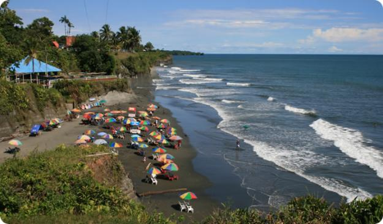
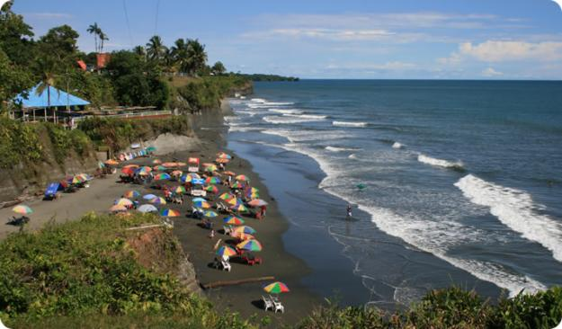

DESCRIPCION
somos una empresa de transporte fluvial; el cual ofrece un servicio de viajes en las rutas de Buenaventura hacia el litoral del san juan y viceversa, este es un medio que permite a las personas que viven en la rutas dicha reservar sus cupos un dia antes de viajar para tener asegurado su puesto,ademas tambien se puede enviar encomiendas.
VENTAJAS COMPETITIVAS
- Bajo costo de operación.
- pasa por los lugares turisticos del pacifico.
- Capacidad para transportar 32 personas.
- Capacidad para transportar y llevar encomiendas con grandes cantidades de carga .
- Menor impacto ambiental en comparación con otros medios de transporte.
- sin retraso llega de forma rapida a su lugar de destino .
Contactos
Para más información, contáctenos en:
- Teléfono: 3145250415
- Correo electrónico: info@transportefluvialpacifico.com-jordanne@hotmail.es
- Dirección: Buenaventura,valle del cauca.local#14 muelle turistico centro- el litoral del san juan Docordo-choco
Imágenes
 
